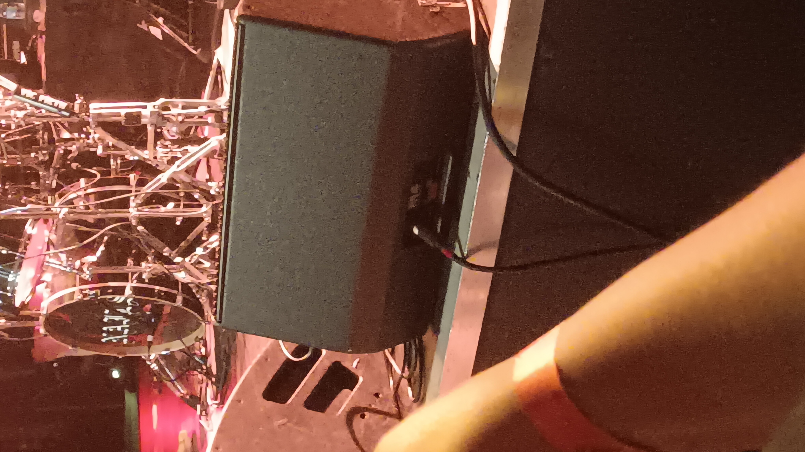
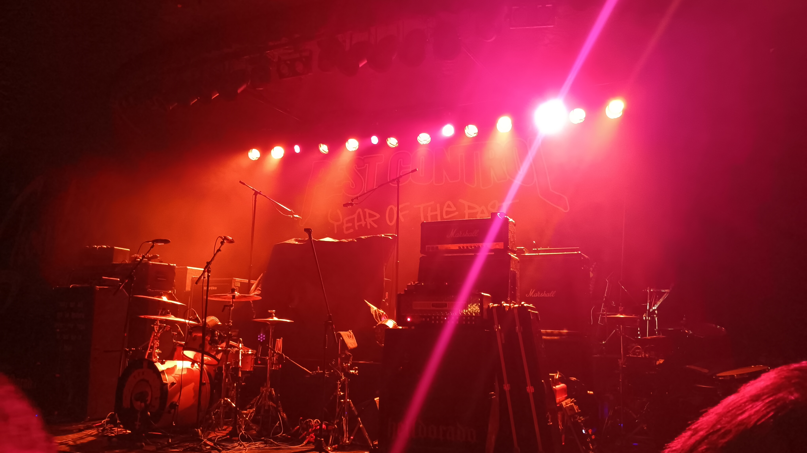
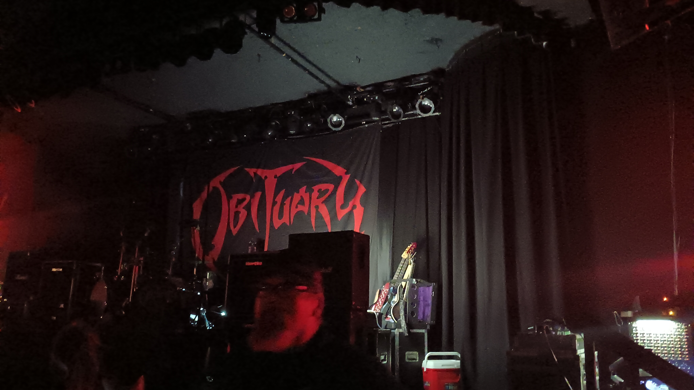
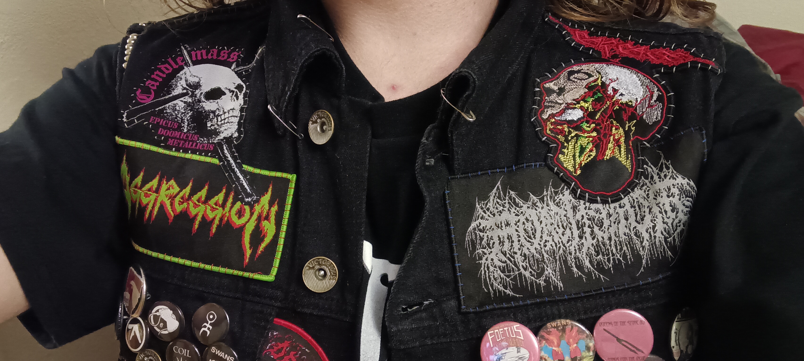

April 30th, 2025

This show was one that I had been anticipating for quite a while. The show itself was on April 30th, but I bought my ticket on March 1st. I had this show and the Bewitcher / Deathcant show lined up for April, but unforeseen circumstances threw a massive wrench into my plans for that month. Fortunately, my mom was willing to drive up to Bellingham and visit me, then drive me to the show and take me back (and stay the night in my dorm room). Generally, I like to listen to a fair chunk of each band's discography before I see them live, but this was a busy time for me, so I didn't get around to listening to anything from Pest Control, Spirit World, or Terror. Even for Obituary and Nails, I only revisited (but did spend a fair amount of time with) "Cause of Death" and checked out the new Nails album, "Every Bridge Burning." So I spent the week (or maybe couple of weeks) before the show with Cause of Death on repeat in preparation.
On the way to the show, I decided to sew another patch onto my jacket while my mom drove. It was an embroidered Carcass patch that had arrived (I think) the day of. I used white stitching. It took me about the whole trip there (it definitely took longer since I was trying to sew in a moving vehicle), and when my mom parked I stayed in the car for another 1-2 minutes to wrap it up. It turned out quite nice. Once I got out of the car, we walked a few blocks down to the venue and chatted, although it took us a minute to find the line. By now I had gotten into the habit of showing up at venues an hour before the doors open, if possible, so the "line" was just a group of maybe 10 people clustered together. My mom and I mostly talked about the both of us getting jobs and paying off debt, paying for college, etc. Once the doors opened we parted ways, and I stepped inside the venue. My first order of business, as is the usual, was to hit all the merch booths while everything was still in stock. I grabbed a white Obituary logo patch. I almost grabbed the large Obituary logo patch in red (the red looked cooler) but then I realized I didn't have that kind of room on my vest anymore, so I changed my mind and got the white Obituary patch. I also picked up a Cause of Death tour t-shirt, but it was a Large because they were already sold out of Small or Medium. Yet another addition to my collection of tour shirt nightgowns. I spent quite a while bumbling around the venue confused, looking for the Nails merch booth. Try as I might, I couldn't find it, and for a minute I started thinking that maybe Nails wasn't coming. I checked their Instagram account but couldn't find anything. Eventually I mustered up the courage to ask one of the venue employees and I got my answer. It was in the fucking bar!! So that sucked. I had to wait until well after the show was over to even get a look at the Nails merch. I played around with the idea of giving someone my card to go in there and get me stuff, but I texted my mom about it and she said it was risky. Deep down, I knew that too. So I waited. I decided to get something from Pest Control, since while walking by I saw that they had some pretty cool patches available. I ran into this guy with a really sick battle vest while waiting in line; his vest was completely covered in colorful patches, all shapes and sizes. There was a large Cannibal Corpse logo (the old logo) in the center back. He complimented my vest, I complimented his, and we had a brief exchange. I still don't really know how to talk to strangers.

Pest Control was great. Their vocalist was a girl, which I wasn't expecting, but she was quite good. Her voice reminded me a lot of Lynda Simpson (Sacrilege). Next up was Spirit World, and they had some interesting outfits on. They were wearing these flashy (and kind of tacky honestly) suits and hats with floral patterns, and their guitars were flashy too. In all honestly, I expected them to be kind of lame, but they were actually pretty good. They had a lot of groovy riffs that I liked. Terror was also pretty good. Apparently Terror was Todd Jones' old band, which is some neat trivia I didn't know before the show. They were also good, although I don't have as much to say about them. The vocalist seemed like a cool guy. Next up was Nails, one of the first bands I discovered in this type of music. I was thrilled to see them. They hit the ground running with "Suffering Soul" from "Unsilent Death" which happened to be one of my favorite songs from them, so I expended a significant amount of my total energy for that show headbanging to just that one song. I think after I was done I had a bit of trouble keeping my balance. They played "Unsilent Death" (the song) later in the set, and I had a lot of fun for that one, too. They played a handful of songs from the new album, plus "Wide Open Wound," which I recognized and knew I was *really* into a few years back, but I just didn't remember it well enough to get the most out of it, I think. But I digress. It was a hell of a set. Finally, there was Obituary, the headliner. I was sort of surprised by John Tardy's vocals. They were more high-pitched than what I was used to, but then again I had barely listened to anything besides "Cause of Death," which he recorded 35 years ago. I was really impressed with the vibe of Obituary's show. Everyone seemed to be having fun and the energy was great. I had a blast hearing "Cause of Death" and was happy to hear a Celtic Frost song performed live (I'd love to see Triptykon sometime, but they only seem to be playing festivals these days). I also found a new Obituary song I liked: "A Lesson in Vengeance."
After the show, I had to wait an extra 30 minutes or something before I could get to the Nails merch booth, and, as expected, they were mostly out of everything. I wanted to get an Unsilent Death longsleeve, but they didn't have one in my size. I ended up just getting a t-shirt of "You Will Never Be One of Us." Nevermind that I hadn't heard that particular album yet.... What I was mostly after was a Nails patch, but they didn't have any. They may have just sold out, but it didn't seem like they were selling any to begin with. I ended up just buying one online when I got back.


